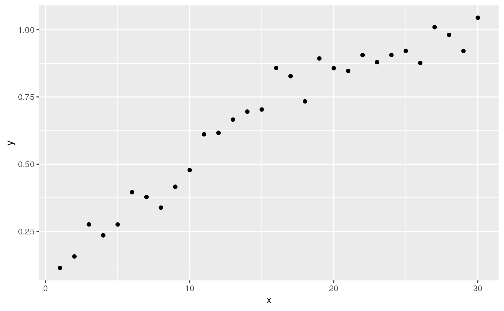

FIMS-RTMB Example
This demo uses a FIMS module to set up an RTMB model.
## Global pointer successfully set: 0x7fc6349face0Set up a logistic module using FIMS
logistic <- methods::new(LogisticSelectivity)Simulate data using the FIMS module
# set the two parameters from the logistic module:
# inflection_point and slope
logistic$inflection_point[1]$value <- 10.0
logistic$slope[1]$value <- 0.2
X <- 1:30
Y <- mu <- X * 0
sdy <- 0.05 #observation error around logistic
set.seed(123)
for(i in X){
# evaluate returns the logistic function given the parameters and x
mu[i] <- logistic$evaluate(X[i])
# simulate random noise around the mean
Y[i] <- rnorm(1, mu[i], sdy)
}
df <- data.frame(x = X, y = Y)
ggplot(df, aes(x = x, y = y)) + geom_point()
Set up RTMB model
dat <- list(y = Y, x = X)
par <- list(inflection_point = 10, slope = 0.2,
ln_sdy = 0)
mod <- function(par){
getAll(par, dat)
sdy <- exp(par$ln_sdy)
mean_selectivity <- logistic$evaluate_RTMB(
x = advector(x),
inflection_point = advector(par$inflection_point),
slope = advector(par$slope)
)
nll <- 0
for(i in seq_along(x)){
nll <- nll - RTMB::dnorm(y[i], mean_selectivity[i], sdy, TRUE)
}
return(nll)
}Generate TMB object and optimize
obj <- RTMB::MakeADFun(mod, par)
opt <- nlminb(obj$par, obj$fn, obj$gr)## outer mgc: 29.93006
## outer mgc: 29.50302
## outer mgc: 512.6907
## outer mgc: 218.1737
## outer mgc: 72.97432
## outer mgc: 82.41938
## outer mgc: 37.30409
## outer mgc: 0.9372692
## outer mgc: 11.07212
## outer mgc: 5.289398
## outer mgc: 3.868949
## outer mgc: 0.6818801
## outer mgc: 3.179516
## outer mgc: 1.391376
## outer mgc: 3.705423
## outer mgc: 0.341448
## outer mgc: 0.008789876
## outer mgc: 0.0006018996
## outer mgc: 1.274528e-05
opt$par## inflection_point slope ln_sdy
## 9.8550441 0.1874293 -3.0572592